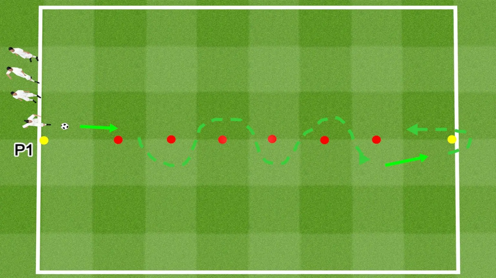

Basic Cone Weave – Individual Drill

Session Length: 5–10 minutes
Age Group: All ages
Skills Developed: Ball control, dribbling, quick touches
Equipment: 1 ball, 6–8 cones
Space Needed: Only 10–15 meters
Setup
- Place a starting cone.
- Set 5–6 cones in a straight line, 1 meter apart, for the weave.
- Put a final cone 2–3 meters after the last cone to finish the run.
- One player works alone. No passing line is needed.
Instructions
- Start at the first cone with the ball.
- Dribble in and out between all cones with controlled touches.
- After the last cone, accelerate to the final cone.
- Turn around and dribble back to the start.
- Keep the ball close and avoid touching cones.
Coaching Focus
- Small touches
- Low body position (bent knees)
- Head up when possible
- Smooth changes of direction
Variations
- Right foot only
- Left foot only
- Use both feet but with faster tempo
- Add a timed run (30–40 seconds)